Mishnah 1: The foot: breaking as it walks
An animal is an attested danger for breaking as it walks in its usual way. Kicking or flinging stones is unusual, so half damages.
The foot
- A beast is an attested danger only as it goes along in its usual way and breaks an object.
- If it kicked, or small stones were tossed from under its feet and broke vessels: half damages.
Two vessels
- If it trampled a vessel and the broken vessel fell on another and broke it: full damages for the first, half for the other.
Fowl
- Fowl are attested dangers in their usual way. If its feet were entangled, or it was jumping and broke a vessel: half damages.
- The rule of the chapter: damage in the usual way, the animal is an attested danger (full); in an unusual way, harmless (half).
Kehati's notes
- Kicking is not damage by the foot but a form of damage by the horn, so half damages. The second vessel is treated like damage by flung stones (tzrarot), which pays half.
The foot (and fowl)
| What happened | What the owner pays |
|---|---|
| Walked in its usual way and broke an object | full damages |
| Kicked, or stones were tossed from under its feet | half damages |
| Broke a vessel, which fell and broke another | full for the first, half for the other |
| Fowl broke something in its usual way | full damages |
| Fowl with entangled feet, or jumping | half damages |
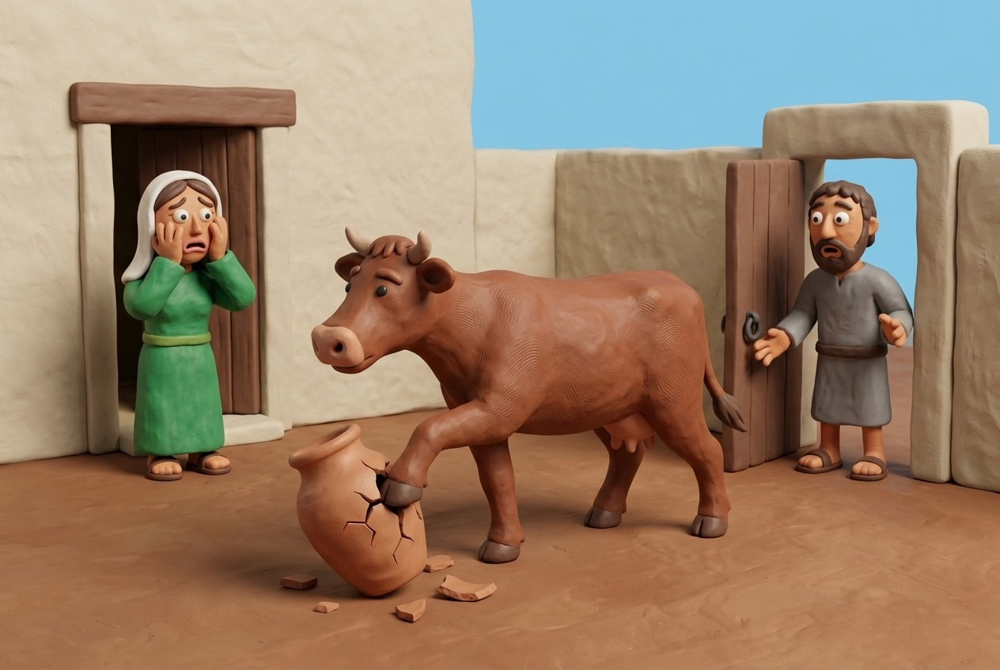
 ?
?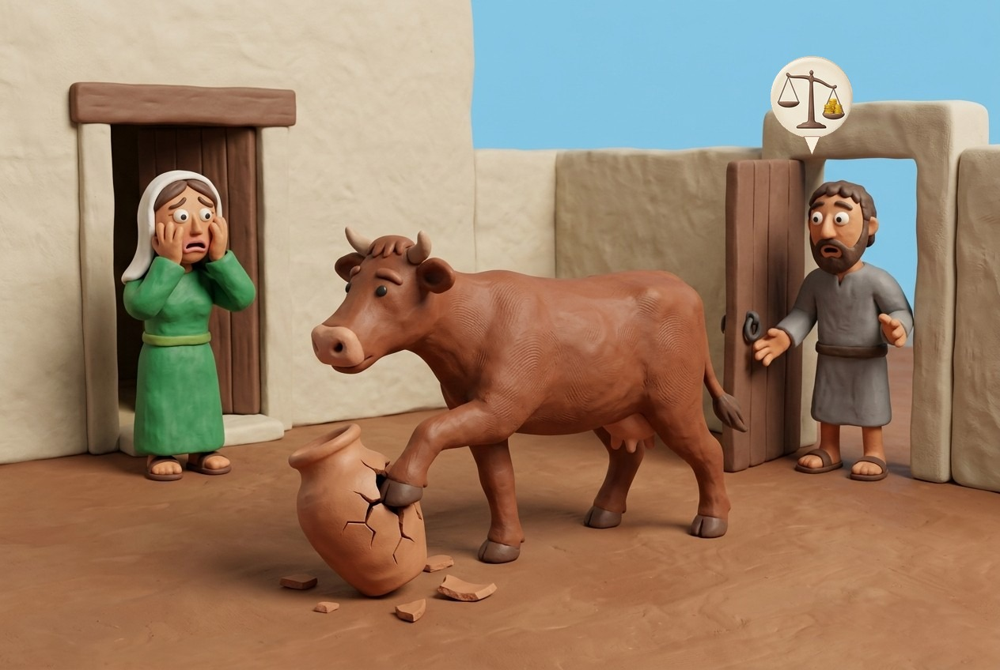
?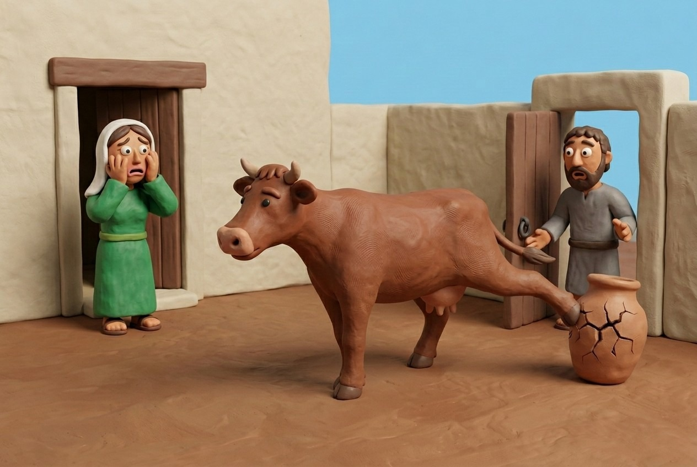
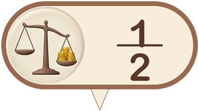
?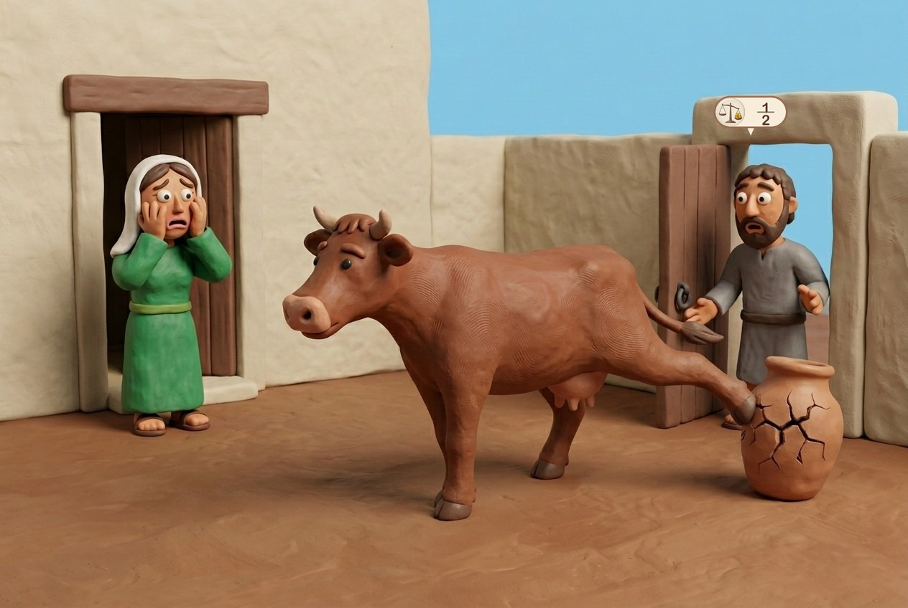
Mishnah 2: The tooth: eating
An animal is an attested danger to eat what is fit for it (fruit and vegetables). Clothing and utensils: half damages. In the public domain: exempt, except for what it benefited.
What it eats
- A beast is an attested danger to eat fruit and vegetables.
- If it ate clothing or utensils: half damages.
Where
- In the domain of the damaged party the owner pays; in the public domain he is exempt.
- If the beast benefited, he pays what it benefited.
What it benefited
- From the middle of the marketplace: what it benefited. From the sides: the damage. In front of a store: what it benefited. Inside a store: the damage.
- The owner of the animal is not liable if you carelessly leave your things in the public domain and his animal eats them.
Kehati's notes
- "What it benefited" is the value of what the animal would normally eat in its place (for example barley) at the low price, a third below market.
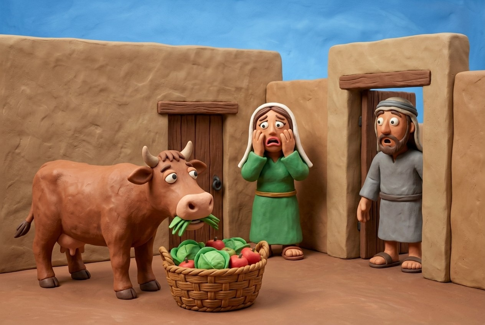
?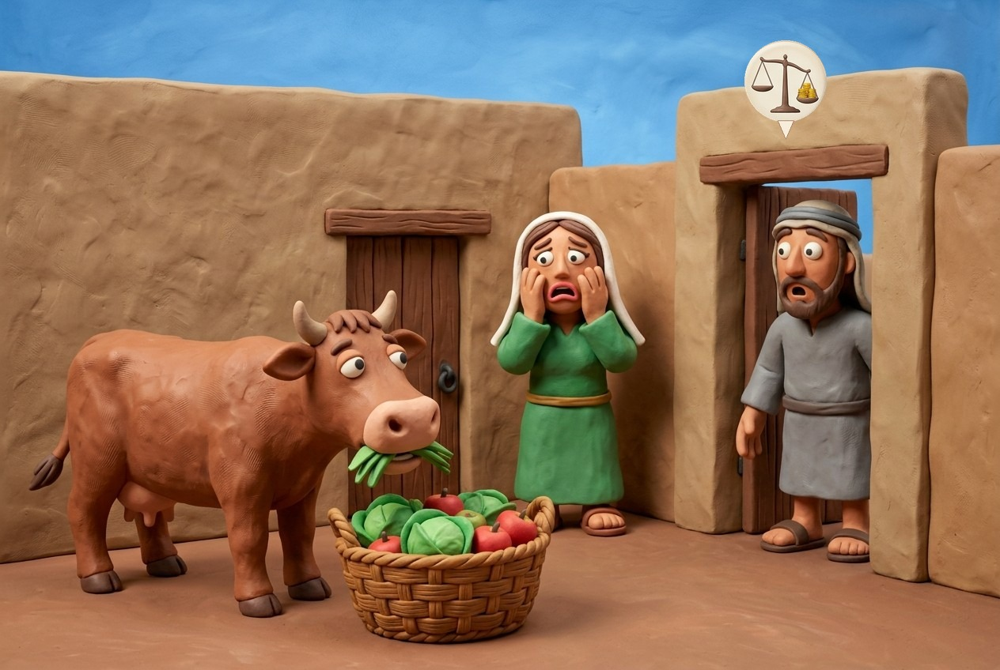
?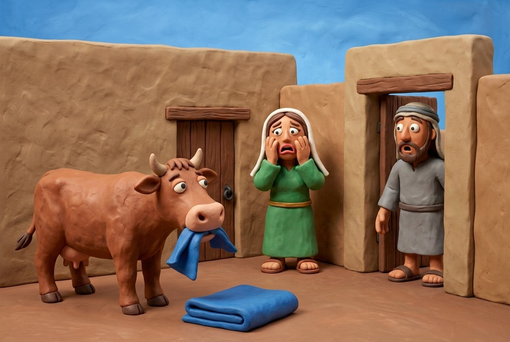
?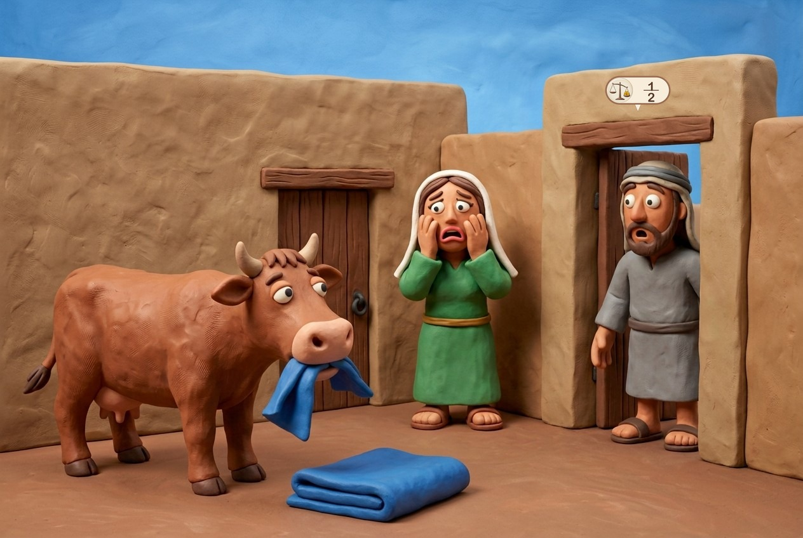
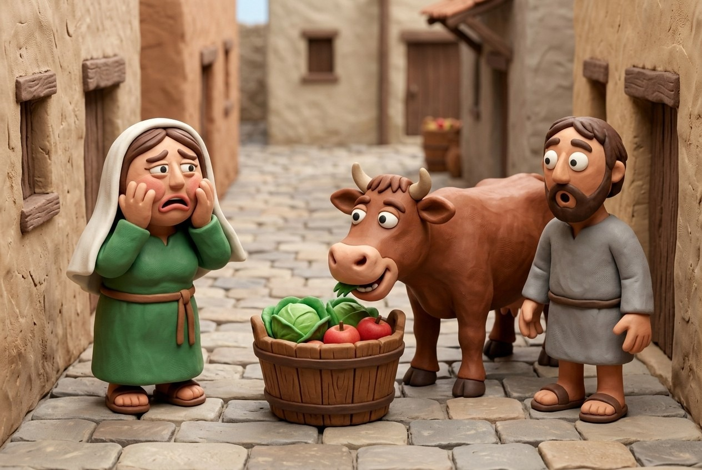
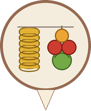
?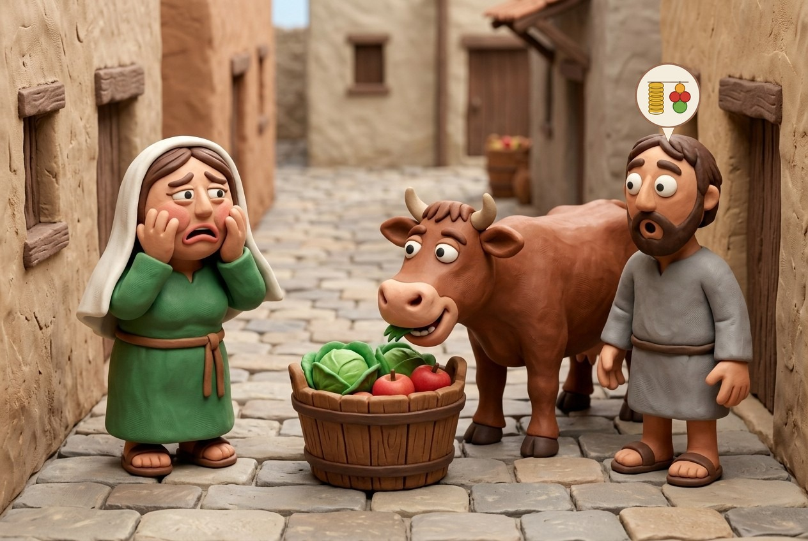
Mishnah 3: Dogs, goats and a cake with an ember
A dog or goat that jumps from a roof is an attested danger; a dog that takes a cake with an ember and burns a stack: full for the cake, half for the stack.
Jumping from a roof
- A dog or goat that jumped from a roof and broke vessels: full damages, since they are attested dangers.
The cake and the stack
- A dog took a cake with an ember on it, went to a stack of grain, ate the cake and burned the stack: full damages for the cake, half for the stack.
- Dogs are likely to eat cake, but unlikely to burn a stack of grain.
Kehati's notes
- The damage to the stack is unusual, since it is not a dog's way to kindle a fire.
Dogs and goats
| What happened | What the owner pays |
|---|---|
| Jumped from a roof and broke vessels | full damages |
| Took a cake with an ember, burned a stack of grain | full for the cake, half for the stack |
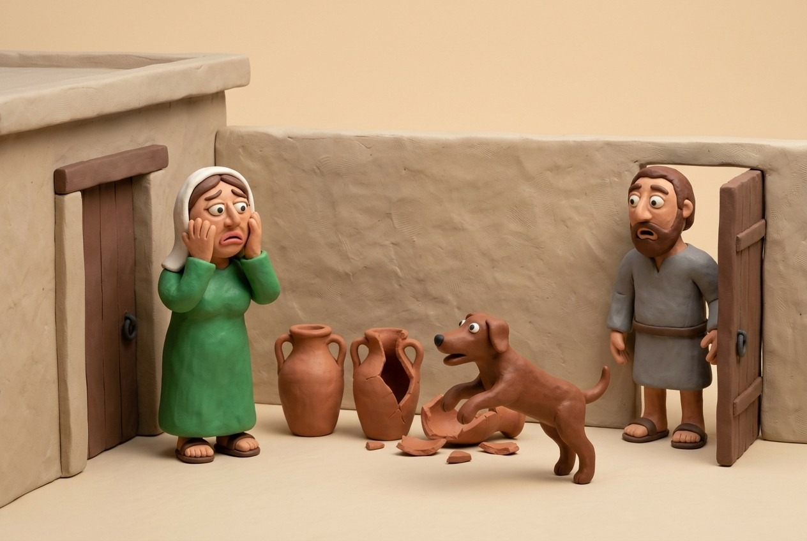
?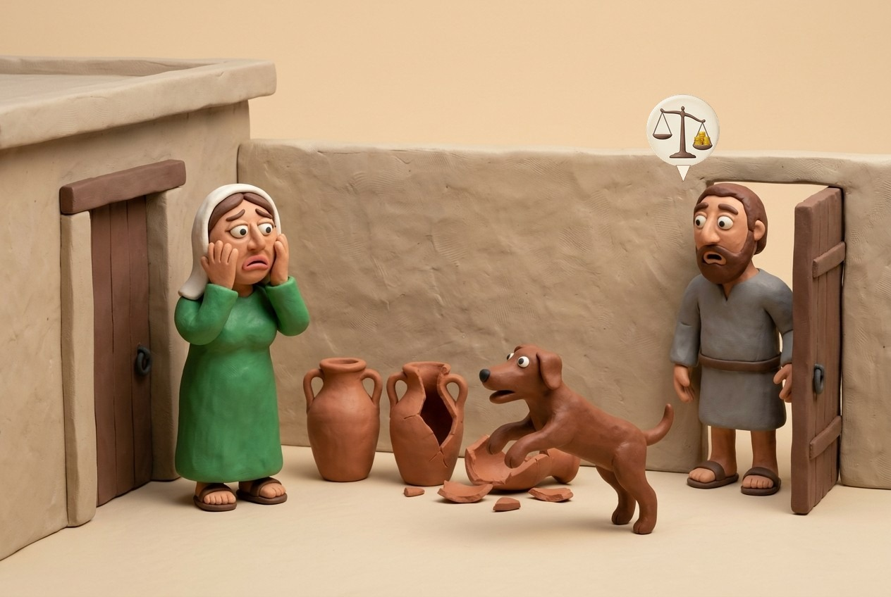
?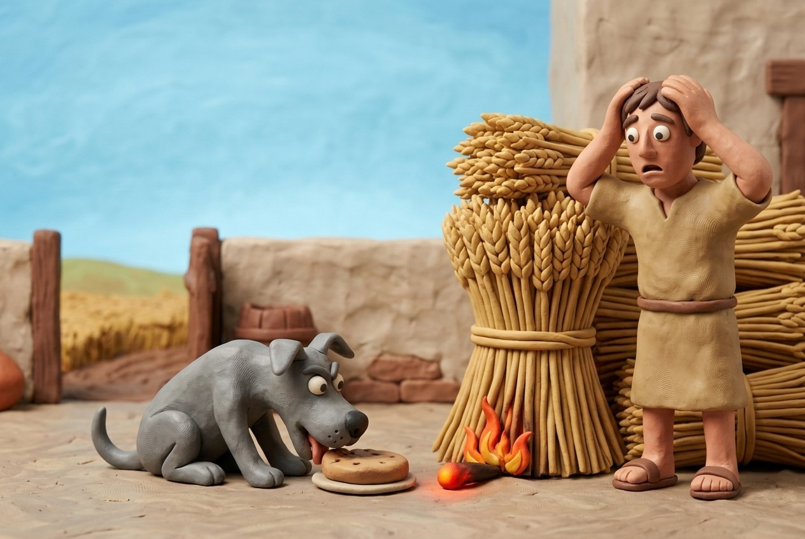
12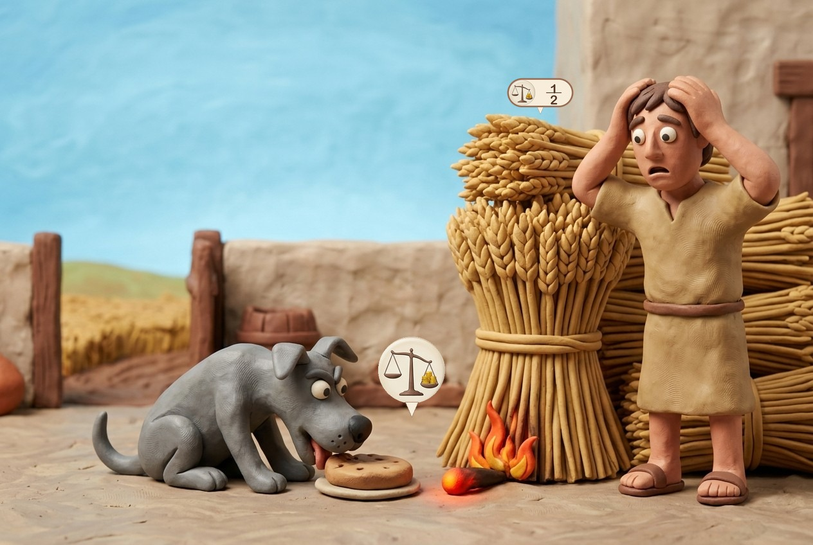
12Mishnah 4: How an animal becomes an attested danger, and stops
Rabbi Judah and Rabbi Meir dispute how many times an animal must damage to be an attested danger and what makes it harmless again. The halakha follows R. Judah for becoming one and R. Meir for returning to harmless.
Rabbi Judah
- An attested danger: people gave testimony about it for three days. A harmless one: it refrained from damage for three days.
Rabbi Meir
- An attested danger: people gave testimony three times. A harmless one: children can touch it and it will not gore.
Halakha
- The halakha follows Rabbi Judah for becoming an attested danger and Rabbi Meir for returning to harmless. Rambam: an ox does not return to harmless until children play with it and it does not gore.
How an animal changes status
| Becomes an attested danger | Harmless again | |
|---|---|---|
| Rabbi Judah | testimony on three days | three days without damage |
| Rabbi Meir | testimony three times | children can touch it and it does not gore |
| Halakha | like Rabbi Judah | like Rabbi Meir |
Mishnah 5: The ox that gores in the injured party's domain
In the public domain the horn pays half damages. In the domain of the injured party Rabbi Tarfon says full damages; the Sages say half. The halakha follows the Sages.
The cases
- If it gored, pushed, bit, lay down or kicked in the public domain: half damages.
- In the injured party's private domain: Rabbi Tarfon says full damages; the Sages say half.
Rabbi Tarfon's argument
- If the law is lenient for tooth and foot in the public domain (exempt) and strict in the private domain of the injured (full), then horn, which is strict even in the public domain, should be full damages in the injured's domain.
The Sages' reply
- "It is enough if the inferred law is as strict as that from which it is inferred" (dayo): half in the public domain, so half in the injured's domain.
- Rabbi Tarfon: I do not derive horn from horn but horn from foot. The Sages answer with the same rule.
Halakha
- The halakha follows the Sages.
Mishnah 6: A person is always an attested danger
A person who damages pays full damages, whether by accident or on purpose, awake or asleep.
The rule
- Human beings are always attested dangers, whether inadvertently or deliberately, awake or asleep. If a man blinded his fellow's eye or broke his utensils he pays full damages.
- A person cannot claim it was accidental and so exempt himself.
Kehati's notes
- This is for damage (nezek)nezek (damage). The other payments of one who injures (pain, healing, loss of time, shame) are in chapter 8, and he pays them only if he acted deliberately or nearly so.
A person who damages
| Payment | When |
|---|---|
| Damage (nezek): full damages | always: accident or on purpose, awake or asleep |
| Pain, healing, loss of time, shame (chapter 8) | only if deliberate or nearly so |
?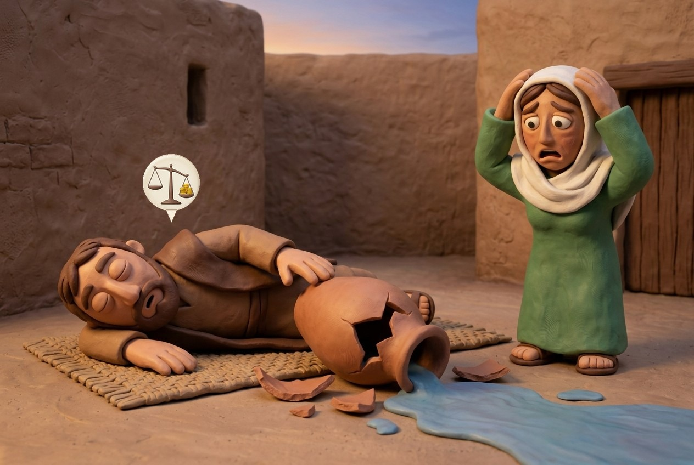
?R. Kulp's commentary
Human beings are always an attested danger, whether the damage is caused inadvertently or deliberately, whether the person who caused the damage is awake or asleep. If a man blinded his fellow’s eye or broke his utensils he must pay full damages. A person who damages is always considered to be a muad, attested danger, and as such he will always pay full damages. The idea is that a person cannot claim that something was accidental and thereby exempt herself from culpability. For instance if I throw something heavy out my window and it hits someone’s car, I cannot claim that it was an accident and that I didn’t mean to do it. Even if I go to sleep next to something that belongs to someone else, and in my sleep I roll over and break the item, I will always be obligated. Questions for further thought: Why should a human being always be a muad? Why not exempt her when she causes damages inadvertently?
Chapter summary
Draft from the mishnah, R. Kulp and Kehati.
Key principles
- An animal is an attested danger (mu'ad)a mu'ad (attested danger) for what is its way (breaking as it walks, eating what it likes). In an unusual way it is harmless (tam)tam (harmless) and the owner pays half. 2:12:22:3
- For tooth (shen)shen (tooth) and foot (regel)regel (foot), the owner is exempt in the public domain (except for what the animal benefited) and pays in the domain of the damaged party. 2:2
- An animal becomes an attested danger (mu'ad)a mu'ad (attested danger) by repeated damage with testimony, and returns to harmless (tam)tam (harmless) when it is safe with children. 2:4
- A conclusion drawn by reasoning cannot be stricter than the law it is drawn from (dayo): half damages for horn (keren)keren (horn) in the injured party's domain. 2:5
- A person is always an attested danger (mu'ad)a mu'ad (attested danger): full damages for damage (nezek)nezek (damage), accident or not, awake or asleep. 2:6
Key terms
- foot (regel)regel (foot) רגל 2:1
- Damage by an animal's trampling as it walks. An attested danger in its usual way.
- tooth (shen)shen (tooth) שן 2:2
- Damage by an animal's eating. An attested danger to eat what is fit for it.
- horn (keren)keren (horn) קרן 2:5
- Damage by goring and similar unusual damage. Harmless unless the animal has become an attested danger.
- it is enough (dayo)dayo (it is enough) דיו 2:5
- The rule that a conclusion from reasoning is not stricter than its source.
Key debates
How does an ox become an attested danger? 2:4
Testimony on three days; harmless again after three days without damage.
Testimony three times; harmless again when children can touch it. Halakha: R. Judah for becoming, R. Meir for returning.
How much does a harmless ox pay in the injured party's domain? 2:5
Full damages, by an argument from tooth and foot.
Half damages, since the conclusion may not exceed its source (dayo). Halakha: the Sages.